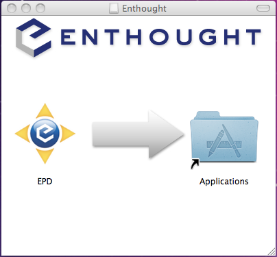

To install on Mac OSX download either of the following EPD 8 installers:
- epd_free-8.0-beta-macos-x86.dmg, (130MB) - The EPD Free installer, which includes the GUI, plus 30 of the most popular Python packages. These packages are free to everyone. EPD subscribers can install additional packages from the EPD repository.
- epd-8.0-beta-macos-x86.dmg, epd-8.0-beta-macos-x86_64.dmg (350MB) - The full EPD installer includes all of EPD Free plus over 100 additional Python packages bundled into the installer. This installer is only available to EPD subscribers.
EPD subscribers may choose either installer. The EPD Free installer is smaller to download and allows subscribers to install additional Python packages, using the EPD 8 Package Manager or the enpkg command line utility. Subscribers have full access to the EPD Python Package repository. The full EPD installer is provided as a convenience for subscribers who wish to download the full set of packages at once.
Both the free and full installers are available in 32-bit (“x86”); the 64-bit (“x86_64”) version is available only to subscribers. On 32-bit machines, you must use a 32-bit installer. On 64-bit machines, you can use either, but we recommend using the 32-bit version unless you specifically need the memory capacity of the 64-bit version. The reason is the 64-bit installer does not include wxPython, a GUI toolkit relied on by many packages not yet supported on 64-bit Mac OSX.
The Mac OSX version of EPD 8 is distributed as a disk image (.dmg) file. Opening this file displays the installation window shown below. EPD can be installed by dragging the EPD icon to the Applications folder in the window, to the computer Desktop, or to another folder. If you drag it to the Applications folder, it will show as “EPD” along with your other applications.
Double-click the EPD icon to launch the GUI. Use of EPD 8 is covered by the EPD End User License Agreement described in license.rft on the disk image.
The installation process wraps up with the installation of the user Python environment, described here, the first time the GUI application is started.